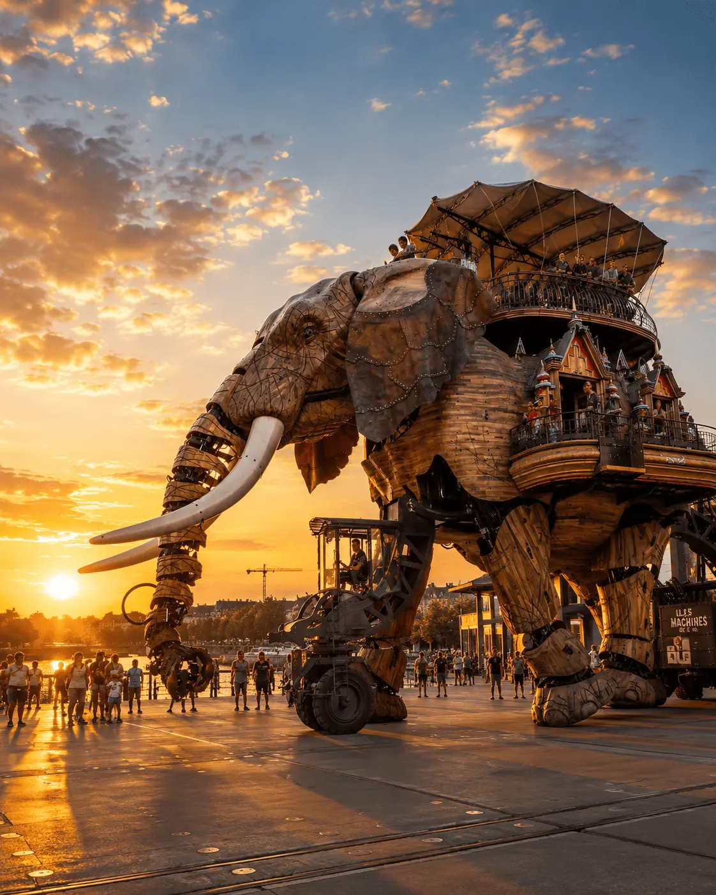
Machines de l’Île, Passage Pommeraye et atmosphère unique.
Naolib, tramway, vélo et mobilité urbaine.
La Baule, Pornic, croisières sur la Loire et vignoble nantais.
Hellfest à Clisson, Voyage à Nantes, concerts, spectacles, festivals et grands rendez-vous nantais.
Voir l'agenda →Située sur les rives de la Loire, Nantes est une ville dynamique qui mêle patrimoine historique, créativité contemporaine et qualité de vie. Ancienne capitale des ducs de Bretagne, elle séduit autant par son histoire que par son esprit innovant.
Du centre historique au quartier de l’Île de Nantes, des Machines de l’Île aux quais de l’Erdre, chaque quartier révèle une ambiance différente entre culture, nature, gastronomie et art urbain.
Entre événements culturels, balades au bord de l’eau, expériences originales et patrimoine remarquable, Nantes s’impose aujourd’hui comme l’une des villes les plus attractives de l’ouest de la France.
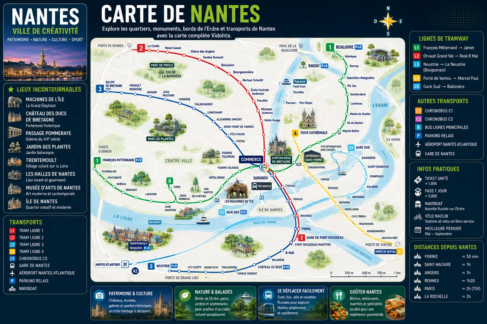
Entre patrimoine historique, créativité urbaine, balades au bord de l’eau et expériences originales, Nantes propose des découvertes uniques qui marquent durablement les visiteurs.
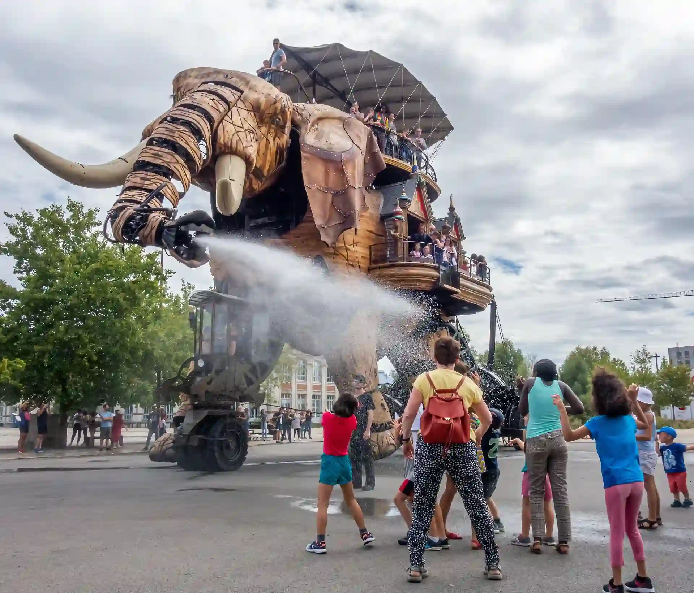
Le Grand Éléphant et le Carrousel des Mondes Marins font partie des expériences les plus emblématiques de Nantes. Un univers unique mêlant art, imagination et mécanique.
🎟️ Voir le Nantes Pass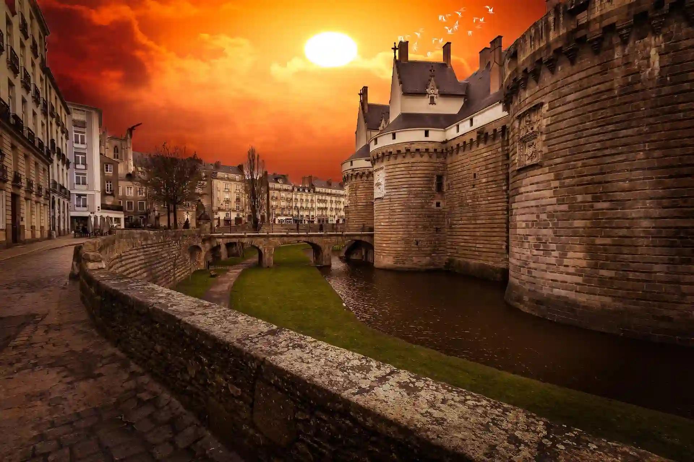
Ancienne résidence des ducs de Bretagne, ce château au cœur de Nantes permet de découvrir plusieurs siècles d’histoire dans un cadre remarquable.
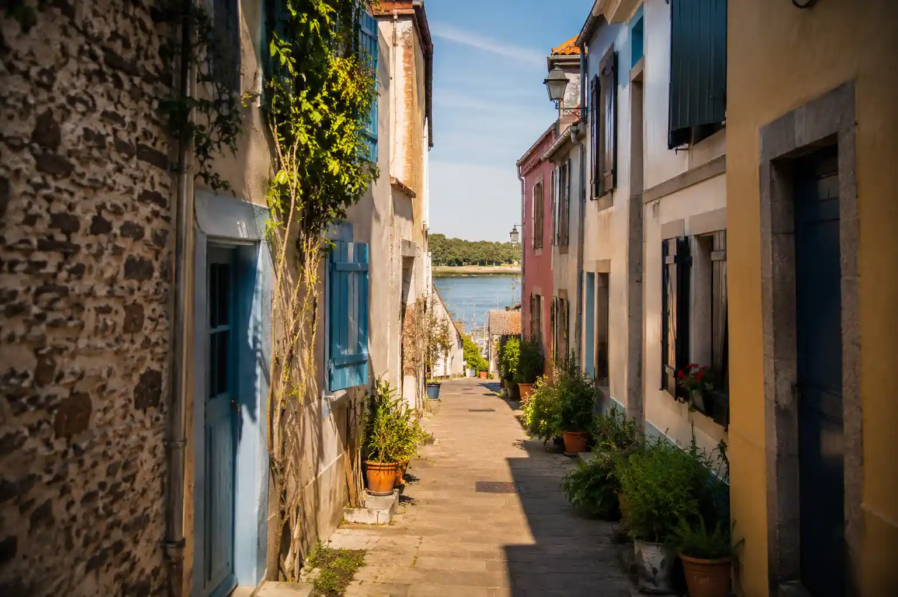
Cet ancien village de pêcheurs aux maisons colorées offre l'une des balades les plus dépaysantes de l'agglomération nantaise.
Rejoignez Trentemoult en empruntant le Navibus N1 depuis l'embarcadère de Gare Maritime. La traversée de la Loire dure environ 8 minutes et permet d'arriver directement au cœur du village.
📍 Départ : Gare Maritime (rive nord)
📍 Arrivée : Trentemoult-Sablières (rive sud)
🎟️ Le Navibus fait partie du réseau Naolib. Un ticket classique permet d'emprunter la navette fluviale au même titre que le tramway ou le bus.
⛴️ Horaires et informations Navibus →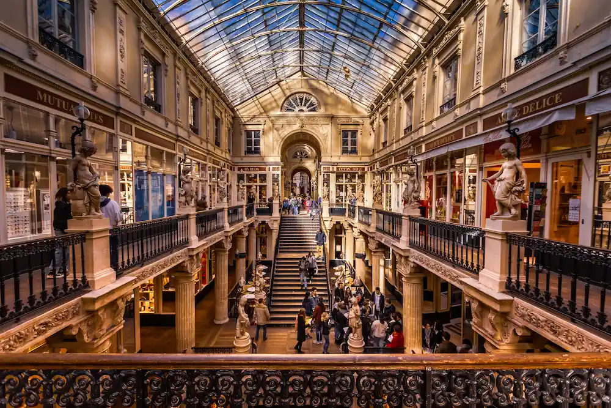
Véritable joyau architectural du XIXe siècle, cette galerie commerçante est l'un des lieux les plus élégants et emblématiques de Nantes.
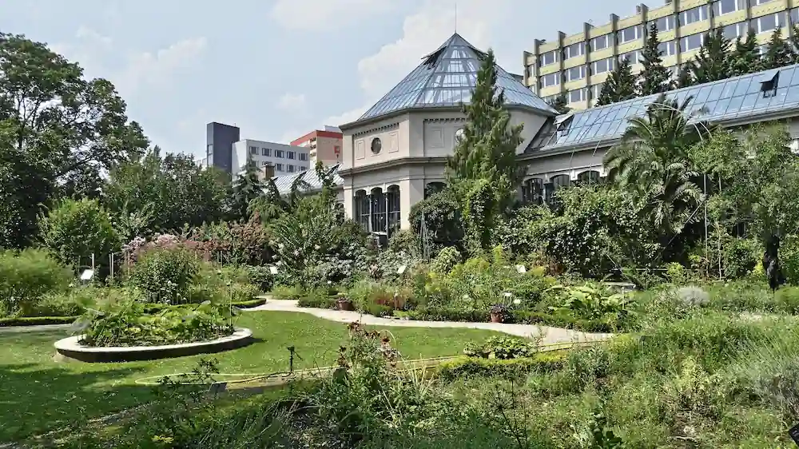
L'un des plus beaux jardins botaniques de France, idéal pour une pause nature à quelques minutes seulement du centre-ville.
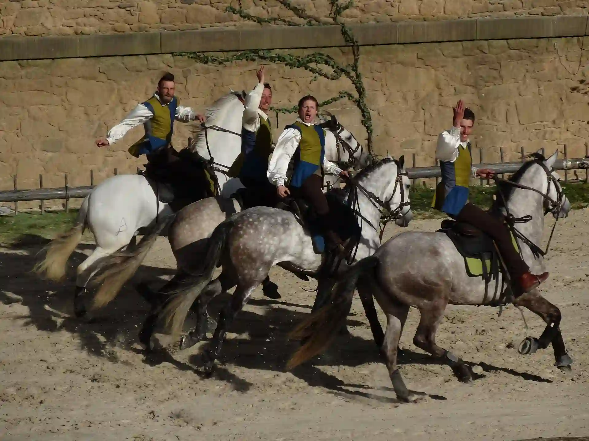
À moins de deux heures de Nantes, le Puy du Fou propose des spectacles grandioses régulièrement classés parmi les meilleurs au monde.
🎟️ Voir les billets du Puy du FouLe réseau Naolib permet de rejoindre facilement les principaux quartiers, la gare, le centre-ville, les Machines de l’Île et de nombreuses communes de la métropole.
Site officiel Naolib →Accédez à plus de 50 attractions, musées, visites et croisières tout en profitant des transports en commun illimités à Nantes.
🎟️ Découvrir le Nantes Pass →Nantes fait partie des villes les plus agréables de France à parcourir à vélo grâce à ses nombreuses pistes cyclables et ses stations réparties dans toute la ville.
Louer un vélo →Le service d'autopartage Marguerite permet de louer une voiture pour quelques heures ou plusieurs jours afin d'explorer Nantes et sa région en toute liberté.
Réserver une voiture →Paris, Rennes, Angers, Bordeaux ou encore la côte Atlantique sont facilement accessibles grâce aux nombreuses liaisons ferroviaires au départ de Nantes.
Réserver un train →L'aéroport Nantes Atlantique dessert de nombreuses destinations françaises et européennes tout au long de l'année.
Vols & informations →Le meilleur choix pour une première visite. Proche du Château des Ducs de Bretagne, du Passage Pommeraye, des commerces et des principaux sites touristiques.
Le quartier le plus moderne et créatif de la ville. Idéal pour séjourner près des Machines de l’Île, des Halles et des nouveaux espaces culturels nantais.
Élégant et animé, ce secteur est réputé pour ses restaurants, ses terrasses, son opéra et son architecture emblématique du centre historique.
Pour une expérience plus originale, ce village coloré situé sur la rive sud de la Loire offre une ambiance paisible et dépaysante à quelques minutes du centre.
Pratique pour les voyageurs arrivant en train. Ce secteur moderne permet de rejoindre rapidement le centre-ville, l’aéroport et les principaux axes de transport.
Comparez les hébergements dans les principaux quartiers de Nantes.
Le français est la langue officielle. Dans les principaux lieux touristiques, il est généralement possible de communiquer en anglais.
L'euro (€) est utilisé partout à Nantes. Les cartes bancaires sont largement acceptées dans les commerces, restaurants et transports.
La France utilise les prises de type C et E avec une tension de 230 V. Aucun adaptateur n'est nécessaire pour la plupart des voyageurs européens.
Deux à trois jours permettent de découvrir les principaux quartiers, les Machines de l’Île, le Château des Ducs et les lieux emblématiques de Nantes.
De mai à septembre, Nantes bénéficie généralement des conditions les plus agréables pour profiter des terrasses, des balades et des événements en plein air.
Pour un séjour confortable, prévoyez généralement entre 90 € et 180 € par jour selon l’hébergement, les activités et les restaurants choisis.
Entre tables gastronomiques, bistrots de quartier, guinguettes au bord de la Loire et adresses emblématiques, Nantes possède une scène culinaire dynamique qui reflète parfaitement l'esprit de la ville.
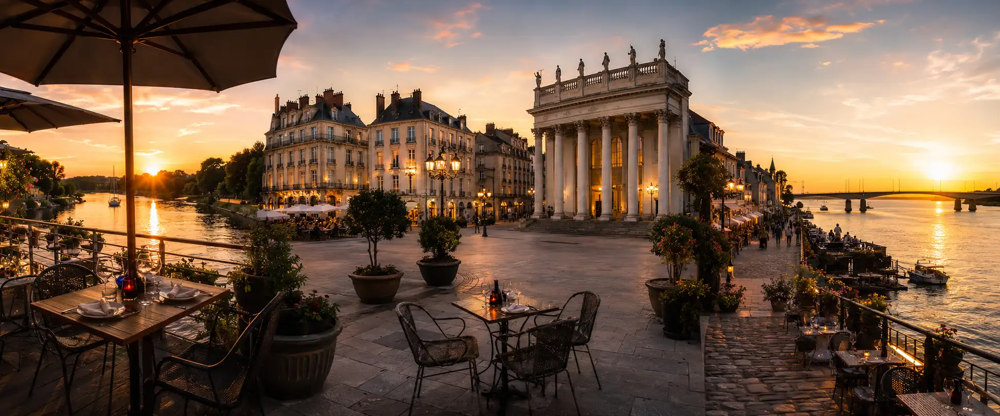
Avec ses ruelles colorées et ses terrasses au bord de la Loire, Trentemoult offre l'une des expériences les plus agréables pour déjeuner ou dîner dans l'agglomération nantaise.
Le cœur gastronomique de Nantes. Entre brasseries élégantes, bistrots contemporains et terrasses animées, le quartier Graslin reste une valeur sûre pour découvrir la cuisine nantaise.
Située au bord de l'Erdre, cette institution nantaise offre un cadre paisible et verdoyant. Une adresse appréciée pour profiter d'un repas dans l'un des plus beaux environnements naturels de Nantes.
Entre océan Atlantique, stations balnéaires, croisières sur la Loire et vignobles renommés, les environs de Nantes offrent de nombreuses escapades à découvrir en une journée.
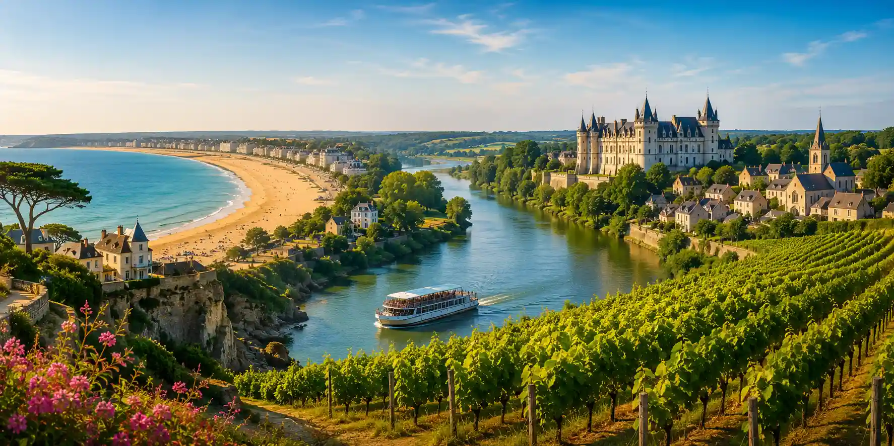
Avec près de 9 kilomètres de sable fin, La Baule possède l'une des plus belles baies d'Europe. Une destination idéale pour profiter de l'océan Atlantique à moins d'une heure de Nantes.
Port de caractère, plages, sentier des douaniers et centre historique font de Pornic l'une des escapades préférées des Nantais tout au long de l'année.
Embarquez pour une croisière entre Nantes et Saint-Nazaire afin de découvrir l'estuaire de la Loire, ses paysages uniques, ses villages de caractère et les œuvres d'art qui jalonnent les berges.
🚢 Réserver la croisière →Partez à la découverte du vignoble nantais et du célèbre Muscadet lors d'une visite guidée au cœur des paysages viticoles qui entourent Nantes.
🍷 Découvrir le vignoble →Découvrez les caves du Château du Bois-Huaut et profitez d'une dégustation guidée pour explorer les vins emblématiques de la région nantaise.
🍷 Réserver la visite →Au-delà de son patrimoine et de sa culture, Nantes possède une véritable identité sportive portée par ses clubs historiques, ses grands événements et plusieurs enceintes majeures de l'ouest de la France.
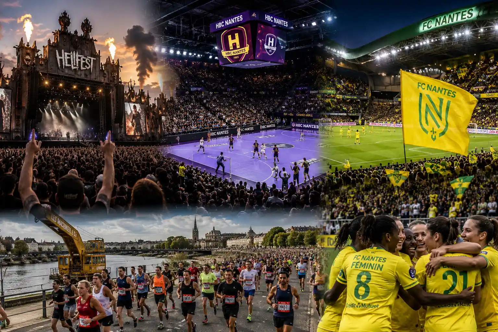
Organisé chaque année à Clisson, à proximité de Nantes, le Hellfest est l'un des plus grands festivals de musique au monde et attire des centaines de milliers de visiteurs.
🎟️ Site officiel du HellfestLe HBC Nantes fait partie des meilleures équipes européennes de handball. Les matchs à la H Arena offrent une ambiance spectaculaire et comptent parmi les grands rendez-vous sportifs de la ville.
🤾 Découvrir le HBC NantesClub historique du football français, le FC Nantes fait vibrer la Beaujoire depuis plusieurs générations. Assister à un match permet de découvrir l'une des grandes places du football français.
🎟️ Billetterie FC NantesLe football féminin poursuit sa progression à Nantes avec une équipe évoluant au plus haut niveau national et contribuant au développement du sport féminin dans la région.
⚽ FC Nantes FémininesChaque année, des milliers de coureurs participent au Marathon de Nantes, l'un des événements sportifs les plus populaires du Grand Ouest.
🏃 Site officielC'est l'attraction la plus emblématique de Nantes. Même lors d'un court séjour, elle mérite une place dans votre programme.
Trentemoult, les bords de l'Erdre, l'Île de Nantes ou encore le parc floral de la Beaujoire permettent de découvrir d'autres facettes de la ville.
Le Hellfest, certains concerts, spectacles ou expériences populaires peuvent afficher complet plusieurs semaines voire plusieurs mois à l'avance.
Le réseau Naolib permet de rejoindre facilement la plupart des quartiers et sites touristiques. Il est souvent plus pratique que la voiture dans le centre-ville.
Le climat océanique peut réserver quelques surprises. Même en été, prévoir un vêtement imperméable reste souvent une bonne idée.
Entre le centre historique, les Machines de l’Île, Trentemoult, les musées et les promenades au bord de l’eau, deux à trois jours permettent de profiter pleinement de la ville.
Deux à trois jours permettent de découvrir les principaux quartiers, les Machines de l’Île, le Château des Ducs de Bretagne, Trentemoult et les lieux emblématiques de la ville.
Les Machines de l’Île constituent l’expérience la plus emblématique de Nantes. Le Grand Éléphant et le Carrousel des Mondes Marins attirent chaque année des visiteurs du monde entier.
De mai à septembre, les températures sont généralement agréables et de nombreux événements animent la ville, notamment Le Voyage à Nantes et plusieurs festivals estivaux.
Nantes reste généralement plus accessible que Paris ou certaines grandes métropoles européennes. Les hébergements, restaurants et transports offrent souvent un bon rapport qualité-prix.
Le réseau Naolib permet de circuler facilement grâce aux tramways, bus, vélos en libre-service et autres solutions de mobilité urbaine réparties dans toute la métropole.
Le centre historique, le quartier Graslin, l’Île de Nantes, Trentemoult et les bords de l’Erdre figurent parmi les secteurs les plus intéressants à explorer.
Les Machines de l’Île, le Jardin des Plantes, les promenades sur les bords de l’Erdre et certaines croisières constituent d’excellentes activités familiales.
Oui. Nantes dispose de nombreuses pistes cyclables et figure régulièrement parmi les villes françaises les plus adaptées aux déplacements à vélo.
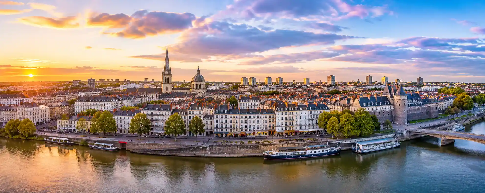